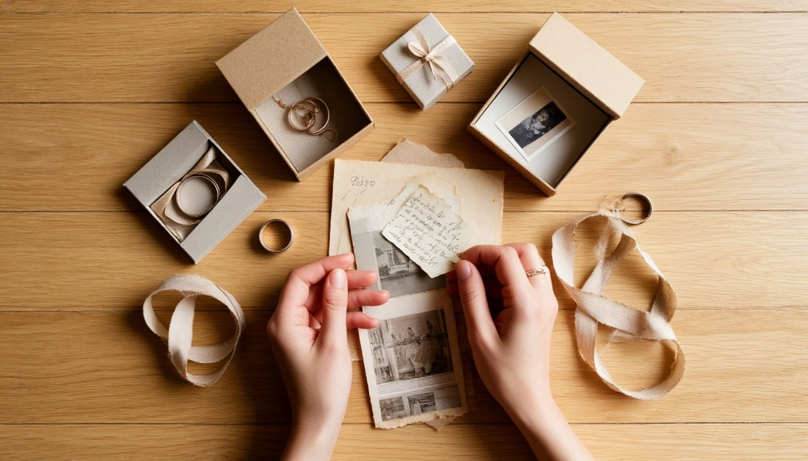

У этого вопроса нет универсального ответа. Но есть три лагеря, которые спорят друг с другом уже много лет. Одни уверены: хранить подарки от бывших — плохая примета. Вторые: выбрасывать — значит разрывать связь с собственной историей. Третьи — просто не знают, что делать с коробкой, которая стоит в шкафу третий год.
Сегодня разберём, что об этом говорят традиции, психология и обычный здравый смысл. И почему правильный ответ у каждого свой.
Что говорят приметы
Народная традиция в этом вопросе почти единодушна: подарки от бывших хранить не стоит. И на это есть три причины.
Первая — «энергия человека». Считается, что вещь впитывает энергетику того, кто её дарил. Если отношения закончились плохо — вещь несёт в дом то же состояние: обиду, раздражение, тревогу.
Вторая — «место для нового». По этой логике, старая вещь занимает место, на которое не может прийти новая. Пока храните прошлое — новое не входит.
Третья — «память держит». Подарок — это якорь. Каждый раз, когда вы его видите, мозг возвращает вас в прошлое. И вы снова переживаете то, что уже закончилось.
Отсюда и рекомендация традиции: либо выбросить, либо отдать, либо сжечь. Сжигание — самый старый способ «разорвать» связь с прошлым.
Что говорит психология
А вот здесь начинается интересное. Психологи не так категоричны.
Первое, на что они обращают внимание: приметы и психология здесь говорят об одном и том же разными словами. «Энергия вещи» — это метафора. А реальный механизм — ассоциативная память. Мозг связывает предмет с событием. И это работает.
Второе — важное. Психологи различают три типа подарков от бывших.
- Токсичные. Те, что связаны с болью, унижением, насилием. Их хранить не стоит — они действительно возвращают вас в тяжёлое состояние.
- Нейтральные. Те, что не несут сильной эмоции. Например, обычная кружка, купленная в переходе. Хранить или выбросить — не принципиально.
- Ценные. Те, что действительно дороги вам — как память о хорошем периоде, а не о человеке. Их можно оставить, если вы не «залипаете» на прошлом.
Третье — ключевое. Вопрос не в подарке, а в том, что с ним связано. Если вещь заставляет вас снова и снова возвращаться к бывшему — это не про подарок, это про незакрытую боль. И работать нужно с ней, а не с коробкой.
Когда хранить — нормально
Есть ситуации, где хранить подарок от бывшего — абсолютно здоровая история.
Если отношения закончились по-человечески. Не все расставания — трагедии. Иногда люди просто расходятся, потому что «не срослось». И память об этом человеке — не боль, а часть жизни.
Если подарок функциональный. Дорогие часы, хорошая сумка, техника. Выкидывать работающую вещь только потому, что её дарил бывший, — это ритуал, а не забота о себе.
Если подарок от другого человека через бывшего. Такое тоже бывает: подарок от бабушки бывшего, от общего друга, от родителей. Связь с бывшим здесь косвенная.
Если прошло время. Спустя годы многие подарки теряют эмоциональный заряд. Они становятся просто вещами. И тогда вопрос «что с ними делать» теряет смысл.
Когда хранить — плохая идея
А есть ситуации, где хранение действительно вредит.
Если вы ещё не закрыли отношения. Каждый раз, видя подарок, вы возвращаетесь в прошлое. И не можете двигаться вперёд.
Если подарок связан с травмой. Побои, измена, унижение, предательство. Такие вещи нужно убирать из поля зрения — это не память, это токсин.
Если вы живёте с новым человеком. Подарки от бывших в общем доме могут создавать напряжение. Не потому что «примета», а потому что это неловко для партнёра.
Если подарок — «якорь надежды». Такое бывает: храните вещь, потому что в глубине души ждёте, что бывший вернётся. Это уже не память, а зависимость.

Что делать: 5 рабочих вариантов
Если вы не знаете, что делать с коробкой в шкафу, вот пять вариантов. Выбирайте по состоянию, а не по правилам.
Вариант 1. Оставить — если вещь работает. Функциональный подарок без эмоционального заряда не несёт зла. Носите, пользуйтесь, не думайте о том, кто дарил.
Вариант 2. Убрать, но не выбрасывать. Положите в дальний ящик. Через год-два достаньте. Если эмоций нет — выбросите спокойно. Если есть — разбирайтесь с ними.
Вариант 3. Отдать. Друзьям, в благотворительность, на переработку. Хорошая вещь продолжает жить — просто у другого человека.
Вариант 4. Сжечь или разорвать. Если подарок связан с болью — ритуал «разрыва» работает. Не потому что магия, а потому что мозгу нужен жест завершения.
Вариант 5. Оставить как память — с условием. Если подарок дорог, но связан с человеком, о котором больно вспоминать, можно «переписать» его историю. Например, переделать украшение, перекрасить шкатулку, сменить оправу у кольца. Вещь станет «вашей», а не «от бывшего».
Что говорят люди, которые прошли через это
Собрал несколько реальных историй — без имён.
«Я хранила кольцо пять лет. Потом поняла: оно мне не нужно. Не из-за приметы. Просто оно больше не про меня. Отдала в ломбард, купила себе другое».
«Мой бывший подарил мне дорогой фотоаппарат. Мы расстались через год. Фотоаппарат я оставила — он работает, и я им пользуюсь. На бывшего не тянет. Просто хорошая техника».
«Выбросила всё. Одеяло, кружки, украшения. Не жалею. На следующий день было легче дышать».
«Оставила одну книгу — с его подписью. Не потому что он, а потому что подпись тёплая. Прочитаю — и улыбнусь. Прошлое — это тоже часть меня».
Вместо итога
У вопроса «хранить или выбросить» нет правильного ответа. Есть только ваш. И он зависит не от приметы, а от того, как вы сейчас относитесь к прошлому.
Если оно вас не держит — храните. Если держит — выбрасывайте. Если не понимаете — попробуйте убрать на время и посмотреть, как вы себя чувствуете через месяц.
Приметы в этом вопросе работают не потому, что «вещь несёт энергию». А потому, что мы сами вкладываем в вещи смысл. И если смысл становится тяжёлым — вещь нужно отпустить.
Не потому что так надо. А потому что вам — так легче.
Моя знакомая однажды сказала фразу, которую я запомнил: «Подарки от бывших — это не про них. Это про меня. И я решаю, что с ними делать». В этом и есть вся правда.